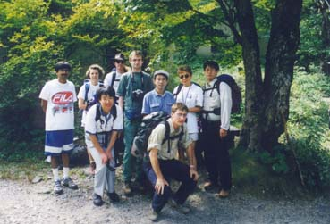

September 12th-13th-14th-15th, 1998. South Alps (Kitadake / Shiranesan)
(organised by Paul Reay)
Assorted Pictures
|  |
First day, Terry consulting the map. From left to right, Thomas Henkel, Terry, Andreas, Tadashi, Silvie, Elena and Victor. Deciding which hut to head for, running too late having spent 5 hours in the traffic jam in Tokyo. We had departed Tsukuba at about 6am! It was too late. |
|
Near the summit on the start of the second day? Silvie, Andreas, me and Thomas. |
|
For more assorted pictures of the trip to the South Alps, please goto Alok Singh`s web pages at: